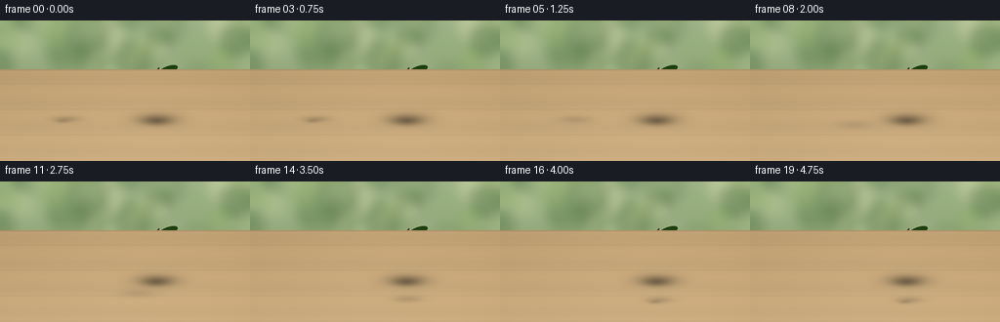
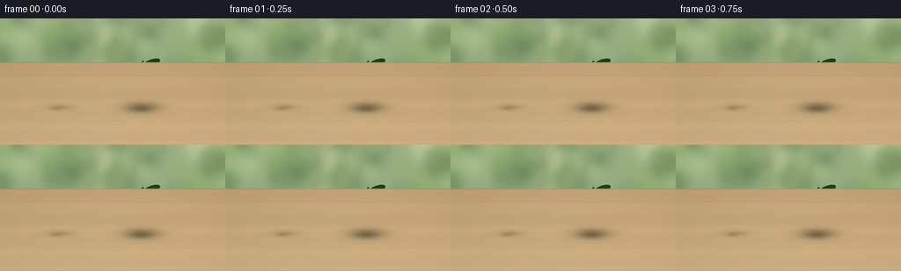
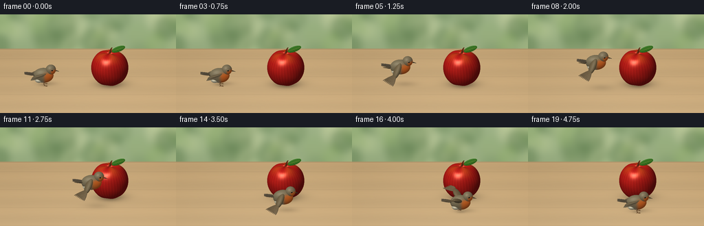
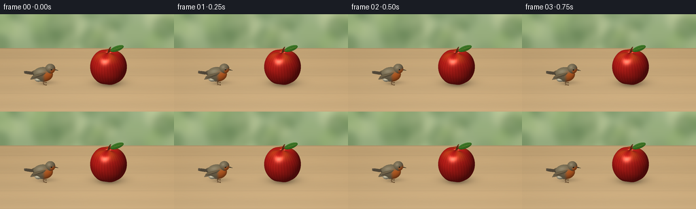

CODING AGENTS AS PIXEL WORLD MODELS
traex/GPT-6.1-Sol · dynamic_spatial_relationship_0039
点击播放 · 原生 RGB 像素
逐轮保存的候选
回放视频、检查图与代码变化。
每份候选均可单独播放。实际图片检查记录在下方工具轨迹中。
候选 01播放与检查图
点击播放 · 原生 RGB 像素


展开代码变化
--- 上一保存版本
+++ 本次保存版本
@@ -0,0 +1,299 @@
+"""Deterministic text-to-video: a robin flies from left of an apple to its foreground.
+Rendering is a small NumPy analytic-surface renderer, with no external assets.
+"""
+from pathlib import Path
+import json, math
+import numpy as np
+from PIL import Image, ImageDraw, ImageFilter
+import artifact_io
+
+ROOT=Path(__file__).resolve().parent
+SPEC=json.loads((ROOT/'task_spec.json').read_text())
+W,H=SPEC['width'],SPEC['height']
+SS=3
+WW,HH=W*SS,H*SS
+rng=np.random.default_rng(1047)
+# Orthographic camera, facing across a sunlit wooden garden table.
+RIGHT=np.array([1.,0,0])
+UP=np.array([0.,.435,.90041657]); UP/=np.linalg.norm(UP)
+D=np.cross(RIGHT,UP) # points into scene
+SCALE=50.0*SS
+CX,CY=128*SS,103*SS
+Y,X=np.mgrid[:HH,:WW]
+U=(X-CX)/SCALE; V=(CY-Y)/SCALE
+ORIGIN=U[...,None]*RIGHT+V[...,None]*UP-D*8
+LIGHT=np.array([-.45,-.65,.85]); LIGHT/=np.linalg.norm(LIGHT)
+VIEW=-D
+
+
+def project(p):
+ p=np.asarray(p)
+ return (CX+SCALE*np.dot(p,RIGHT), CY-SCALE*np.dot(p,UP))
+
+def normalize(v):
+ v=np.asarray(v,dtype=float)
+ return v/np.maximum(np.linalg.norm(v,axis=-1,keepdims=True),1e-12)
+
+# Quiet defocused foliage gives a clear silhouette, without competing objects.
+bg=np.zeros((HH,WW,3),np.float64)
+y=np.arange(HH)[:,None]/HH
+bg[:]=np.stack([157-24*y+np.zeros((HH,WW)),178-24*y+np.zeros((HH,WW)),134-24*y+np.zeros((HH,WW))],axis=-1)
+bi=Image.fromarray(np.uint8(bg)).convert('RGB'); dr=ImageDraw.Draw(bi,'RGBA')
+for k in range(95):
+ px=rng.uniform(-60,WW+60); py=rng.uniform(-60,HH*.65); r=rng.uniform(12,65)
+ col=tuple(rng.choice([np.array([71,105,58]),np.array([208,220,162]),np.array([143,173,103]),np.array([230,230,181])]))
+ dr.ellipse((px-r,py-r,px+r,py+r),fill=(*col,int(rng.uniform(30,105))))
+bi=bi.filter(ImageFilter.GaussianBlur(15))
+BG=np.array(bi,dtype=float)
+# Ray/plane intersection for a richly but subtly grained oak table.
+t_ground=-ORIGIN[:,:,2]/D[2]
+P=ORIGIN+t_ground[...,None]*D
+TABLE=P[:,:,1]<2.45
+xx=P[:,:,0]; yy=P[:,:,1]
+grains=(2.2*np.sin(yy*75+3*np.sin(xx*1.8))+1.0*np.sin(yy*175+4*np.sin(xx*4))+.6*np.sin(yy*345+xx*3))
+board=.75*np.sin(yy*5.5)+.4*np.sin(xx*.7+yy*.3)
+light=2.5*np.cos(xx*.8)-3*yy
+wood=np.stack([198+grains+light+board*4,167+grains*.8+light+board*3,122+grains*.65+light+board*2],axis=-1)
+seam=np.exp(-((np.mod(yy+.65,1.2)-.012)/.009)**2)
+wood-=seam[...,None]*np.array([18,15,10])
+BG[TABLE]=wood[TABLE]
+# Small bevel at the distant edge, softer toward the garden.
+edge=TABLE&(P[:,:,1]>2.39)
+BG[edge]=BG[edge]*.9
+BASEDEPTH=np.where(TABLE,t_ground,np.inf)
+
+class Renderer:
+ def __init__(self,color=None,depth=None):
+ self.color=BG.copy() if color is None else color.copy()
+ self.depth=BASEDEPTH.copy() if depth is None else depth.copy()
+
+ def bounds(self,c,r):
+ sx,sy=project(c); rp=r*SCALE+3
+ return (max(0,int(sx-rp)),min(WW,int(sx+rp)+1),max(0,int(sy-rp)),min(HH,int(sy+rp)+1))
+
+ def ellipsoid(self,c,r,color,axes=None,kind=None,rough=.4):
+ c=np.array(c,dtype=float); r=np.array(r,dtype=float)
+ A=np.eye(3) if axes is None else np.array(axes,dtype=float)
+ x0,x1,y0,y1=self.bounds(c,float(max(r)))
+ if x1<=x0 or y1<=y0:return
+ o=ORIGIN[y0:y1,x0:x1]
+ q=(o-c)@A/r
+ d=(D@A)/r
+ aa=np.dot(d,d); bb=np.sum(q*d,axis=-1); cc=np.sum(q*q,axis=-1)-1
+ discr=bb*bb-aa*cc
+ t=(-bb-np.sqrt(np.maximum(discr,0)))/aa
+ z=self.depth[y0:y1,x0:x1]
+ mask=(discr>=0)&(t>0)&(t<z)
+ if not np.any(mask):return
+ pos=q+t[...,None]*d
+ normal=normalize((pos/r)@A.T)
+ col=np.broadcast_to(np.array(color,dtype=float),pos.shape).copy()
+ if kind in ('body','head'):
+ # Soft orange breast and face; dorsal feathers stay earthy brown.
+ if kind=='body':
+ orange=1/(1+np.exp(-12*(pos[...,0]-.10)))
+ orange*=1/(1+np.exp(12*(pos[...,2]-.55)))
+ orange*=1/(1+np.exp(10*(pos[...,1]+.02)))
+ belly=(1/(1+np.exp(14*(pos[...,2]+.58))))*(1-orange*.85)
+ col=col*(1-belly[...,None]*.6)+np.array([213,204,175])*belly[...,None]*.6
+ else:
+ orange=1/(1+np.exp(-11*(pos[...,0]-.03)))
+ orange*=1/(1+np.exp(11*(pos[...,2]-.2)))
+ col=col*(1-orange[...,None])+np.array([212,103,37])*orange[...,None]
+ texture=2.0*np.sin(pos[...,0]*108+pos[...,2]*22)*np.sin(pos[...,2]*79+pos[...,1]*44)
+ col+=texture[...,None]
+ if kind=='feather':
+ grain=2*np.sin(pos[...,0]*120+pos[...,1]*15)
+ col+=grain[...,None]
+ diff=np.maximum(0,np.sum(normal*LIGHT,axis=-1))
+ ambient=.56+.08*normal[...,2]
+ shading=ambient+.43*diff
+ halfv=normalize(LIGHT+VIEW)
+ spec=np.maximum(0,np.sum(normal*halfv,axis=-1))**(55 if rough<.25 else 22)
+ col=col*shading[...,None]+spec[...,None]*(22 if rough>.25 else 100)
+ if kind=='eye':
+ col=np.broadcast_to(np.array([5.,7.,6.]),col.shape).copy()
+ col+=spec[...,None]*160
+ view=self.color[y0:y1,x0:x1]
+ view[mask]=np.clip(col[mask],0,255)
+ z[mask]=t[mask]
+
+ def capsule(self,a,b,r,color,ratio=.85,kind=None):
+ a=np.array(a); b=np.array(b); v=b-a; length=np.linalg.norm(v)
+ ax=normalize(v)
+ ref=np.array([0.,0.,1.]) if abs(ax[2])<.85 else np.array([0.,1.,0.])
+ u=normalize(np.cross(ref,ax)); vv=normalize(np.cross(ax,u))
+ A=np.stack([ax,u,vv],axis=1)
+ self.ellipsoid((a+b)/2,[length/2+r,r,r*ratio],color,A,kind)
+
+ def shadow(self,c,rx,ry,strength):
+ # Soft shadows on the actual table in world-space.
+ dist=((P[:,:,0]-c[0])/rx)**2+((P[:,:,1]-c[1])/ry)**2
+ alpha=np.exp(-dist*2)*strength*TABLE
+ self.color*=1-alpha[...,None]
+
+
+def apple_field(p):
+ # A rounded, gently five-lobed apple, with depressed stem and blossom ends.
+ q=(p-np.array([.63,0.,.54]))/np.array([.54,.50,.56])
+ length=np.sqrt(np.sum(q*q,axis=-1))
+ nz=q[...,2]/np.maximum(length,1e-9)
+ angle=np.arctan2(q[...,1],q[...,0])
+ shape=1+.025*np.cos(5*angle)*(np.abs(nz)**4)+.045*nz-.16*np.abs(nz)**10
+ return (length-shape)*.50
+
+
+def apple(r):
+ center=np.array([.63,0,.54]); bound=.71
+ x0,x1,y0,y1=r.bounds(center,bound)
+ origins=ORIGIN[y0:y1,x0:x1]
+ delta=origins-center
+ b=np.sum(delta*D,axis=-1); c=np.sum(delta*delta,axis=-1)-bound*bound
+ discriminant=b*b-c
+ active=discriminant>=0
+ t=-b-np.sqrt(np.maximum(discriminant,0))
+ limit=-b+np.sqrt(np.maximum(discriminant,0))
+ hit=np.zeros_like(active)
+ for _ in range(75):
+ p=origins+t[...,None]*D
+ sdf=apple_field(p)
+ new=active&(sdf<.0004)
+ hit|=new; active&=~new
+ t+=np.where(active,np.maximum(sdf*.74,.00015),0)
+ active&=(t<limit)
+ if not np.any(active):break
+ p=origins+t[...,None]*D
+ eps=.0008
+ normals=[]
+ for j in range(3):
+ off=np.zeros(3); off[j]=eps
+ normals.append((apple_field(p+off)-apple_field(p-off))/(2*eps))
+ normal=normalize(np.stack(normals,axis=-1))
+ local=p-center
+ a=np.arctan2(local[...,1],local[...,0]); zz=local[...,2]
+ stripe=np.sin(a*36+zz*5)+.45*np.sin(a*73-zz*8)+.3*np.sin(a*121+zz*12)
+ variation=7*stripe+4*np.sin(zz*15+a*3)
+ col=np.stack([180+variation,27+variation*.27,23+variation*.18],axis=-1)
+ # Warm yellow blush near the dimple and minute pale lenticels.
+ blush=np.clip((zz-.28)*1.8,0,.35)*(0.5+.5*np.sin(a*4))
+ col=col*(1-blush[...,None])+np.array([221,121,31])*blush[...,None]
+ speck=(np.sin(p[...,0]*387+p[...,1]*197)*np.sin(p[...,2]*421-p[...,1]*249)>.987)
+ col+=speck[...,None]*np.array([28,24,12])
+ diffuse=np.maximum(0,normal@LIGHT)
+ col*= (.40+.58*diffuse+.08*np.maximum(normal[...,2],0))[...,None]
+ hv=normalize(LIGHT+VIEW)
+ shine=np.maximum(0,normal@hv)
+ col+= (shine**55)[...,None]*np.array([123,106,86])
+ col+= (shine**12)[...,None]*np.array([15,13,9])
+ z=r.depth[y0:y1,x0:x1]; mask=hit&(t<z)
+ r.color[y0:y1,x0:x1][mask]=np.clip(col[mask],0,255); z[mask]=t[mask]
+ # Short bent woody stem, and a distinctly green single leaf.
+ r.capsule([.63,0,1.012],[.65,.005,1.14],.023,[87,52,24])
+ r.capsule([.65,.005,1.14],[.69,.005,1.205],.018,[103,62,30])
+ r.capsule([.653,.015,1.105],[.84,.015,1.16],.009,[94,109,40])
+ direction=normalize(np.array([.85,.05,.32])); across=normalize(np.cross([0,-1,.3],direction)); nn=normalize(np.cross(direction,across))
+ axes=np.stack([direction,across,nn],axis=1)
+ r.ellipsoid([.88,.009,1.16],[.21,.08,.010],[54,115,33],axes,rough=.6)
+ r.capsule([.70,-.006,1.10],[1.064,-.006,1.232],.004,[146,165,65])
+ for t in [.25,.43,.61,.78]:
+ p0=np.array([.70,-.009,1.10])+t*np.array([.364,0,.132])
+ for side in [-1,1]:
+ pp=p0+direction*.04+across*(side*.053*np.sin(t*np.pi))
+ pp[1]-=.003
+ r.capsule(p0,pp,.0018,[106,144,46])
+
+static=Renderer()
+static.shadow([.66,.10],.62,.41,.27)
+static.shadow([.64,0],.37,.27,.23)
+apple(static)
+STATIC_COLOR=static.color; STATIC_DEPTH=static.depth
+
+
+def bird(r,center,flap,flying,settle=0):
+ center=np.array(center)
+ # Tail feathers, mildly fanned, with understated pale edges.
+ for j in range(5):
+ a=center+np.array([-.19,(j-2)*.025,.02])
+ b=center+np.array([-.53,(j-2)*.033,.07])
+ r.capsule(a,b,.029,[83+j*2,73+j*2,57+j*2],.5,'feather')
+ # Far wing is genuinely behind the torso in the depth buffer.
+ def wing(side):
+ if flying>0.03:
+ root=center+np.array([-.035,side*.12,.10])
+ f=flap
+ joint=root+np.array([-.105,side*(.16+.07*(1-abs(f))),.24*f])
+ r.capsule(root,joint,.105,[105,91,65],.60,'feather')
+ for k in range(8):
+ frac=k/7
+ start=joint+np.array([-.06*frac,side*.005,0])
+ end=root+np.array([-.18-.27*frac,side*(.31+.12*(1-frac)),(.43-.10*frac)*f])
+ r.capsule(start,end,.040- .010*frac,[105+7*(1-frac),89+6*(1-frac),64+5*(1-frac)],.42,'feather')
+ # Fine buff shaft gives readable overlapping individual feathers.
+ if side==-1:
+ ofs=np.array([0,-.007,.006])
+ r.capsule(start+ofs,end+ofs,.0032,[147,129,93],.6)
+ else:
+ for k in range(5):
+ aa=center+np.array([.03-k*.015,side*.153,.11-k*.026])
+ bb=center+np.array([-.28-k*.017,side*.17,.015-k*.023])
+ r.capsule(aa,bb,.057-k*.006,[104+k*2,91+k*2,67+k*2],.43,'feather')
+ if side==-1:r.capsule(aa+np.array([0,-.01,.012]),bb+np.array([0,-.01,.012]),.003,[154,137,105])
+ wing(1)
+ # Legs articulated upward during the flight, down again for landing.
+ tuck=flying
+ for side in [-1,1]:
+ hip=center+np.array([.045,side*.073,-.16])
+ knee=center+np.array([.005-.07*tuck,side*.079,-.23+.065*tuck])
+ ankle=center+np.array([.04-.15*tuck,side*.084,-.302+.18*tuck])
+ r.capsule(hip,knee,.012,[139,104,65]);r.capsule(knee,ankle,.010,[120,85,52])
+ for j in range(3):
+ toe=ankle+np.array([.070,(j-1)*.025,-.006])*(1-.5*tuck)
+ r.capsule(ankle,toe,.007,[110,79,48])
+ r.capsule(ankle,ankle+[-.044,0,-.005],.006,[112,80,51])
+ r.ellipsoid(center,[.294,.175,.226],[123,112,86],kind='body')
+ # Cream undertail patch.
+ r.ellipsoid(center+[-.135,-.017,-.123],[.12,.137,.09],[194,187,160],rough=.6)
+ head=center+np.array([.215,-.005,.188])
+ r.ellipsoid(head,[.149,.139,.151],[124,112,86],kind='head')
+ wing(-1)
+ # Eye, pale fine eye-ring, dark glossy pupil and its tiny daylight catchlight.
+ eye=head+np.array([.035,-.127,.033])
+ r.ellipsoid(eye,[.027,.012,.029],[165,153,119])
+ r.ellipsoid(eye+np.array([.001,-.007,0]),[.022,.012,.024],[6,7,5],kind='eye',rough=.12)
+ r.ellipsoid(eye+np.array([-.005,-.017,.009]),[.006,.004,.006],[246,246,216],rough=.2)
+ # Pointed, charcoal beak, made of successively narrower analytic surfaces.
+ base=head+np.array([.128,-.015,-.025])
+ r.capsule(base,base+[.063,0,-.012],.019,[57,51,36],.65)
+ r.capsule(base+[.05,0,-.010],base+[.105,0,-.025],.010,[53,49,35],.6)
+ r.capsule(base+[.081,0,-.020],base+[.12,0,-.029],.005,[52,47,33],.6)
+
+
+def smooth(t):return t*t*(3-2*t)
+
+frames=[]
+for i in range(SPEC['frames']):
+ r=Renderer(STATIC_COLOR,STATIC_DEPTH)
+ if i<=3:
+ center=np.array([-1.30,0,.315]); center[2]+=.003*np.sin(i*1.5)
+ flight=0.; flap=0.
+ elif i<16:
+ raw=(i-3)/12
+ u=smooth(raw)
+ center=np.array([-1.30+1.89*u,-.94*u,.315+.61*np.sin(np.pi*raw)])
+ flight=1.
+ flap=np.sin((i-3)*2.05+.5)
+ else:
+ center=np.array([.59,-.94,.315])
+ flight=max(0.,1-(i-15)/2)
+ flap=np.sin((i-3)*2.05+.5)*flight
+ # A soft moving shadow separates the hovering body from the table.
+ altitude=center[2]-.315
+ shadow_c=[center[0]+.10+.12*altitude,center[1]+.10+.14*altitude]
+ r.shadow(shadow_c,.40+.15*altitude,.21+.15*altitude,.15*np.exp(-altitude*1.0))
+ if altitude<.03:r.shadow([center[0]+.01,center[1]],.18,.12,.11)
+ bird(r,center,flap,flight)
+ img=Image.fromarray(np.uint8(np.clip(r.color,0,255))).resize((W,H),Image.Resampling.LANCZOS)
+ frames.append(np.array(img))
+frames=np.stack(frames).astype(np.uint8)
+artifact_io.save(frames,ROOT)
+print(f'Saved {len(frames)} RGB frames, {W}x{H}, {SPEC["fps"]} fps to {ROOT}')
候选 02播放与检查图
点击播放 · 原生 RGB 像素


展开代码变化
--- 上一保存版本 +++ 本次保存版本 @@ -16,7 +16,7 @@ # Orthographic camera, facing across a sunlit wooden garden table. RIGHT=np.array([1.,0,0]) UP=np.array([0.,.435,.90041657]); UP/=np.linalg.norm(UP) -D=np.cross(RIGHT,UP) # points into scene +D=-np.cross(RIGHT,UP) # camera is above and in front of the table SCALE=50.0*SS CX,CY=128*SS,103*SS Y,X=np.mgrid[:HH,:WW]
可观测工具轨迹
实际执行的命令与返回图片。
命令 1exit 0
/bin/bash -lc 'pwd && ls -la && cat prompt.txt && cat GENERATION_RULES.md && cat task_spec.json'
命令 2exit 0
/bin/bash -lc "cat artifact_io.py && python - <<'PY'
import PIL,numpy
print('PIL and NumPy available')
PY"命令 3exit 0
/bin/bash -lc 'which ffmpeg || true'
命令 4exit 0
/bin/bash -lc "cat > generate.py <<'PY'
\"\"\"Deterministic text-to-video: a robin flies from left of an apple to its foreground.
Rendering is a small NumPy analytic-surface renderer, with no external assets.
\"\"\"
from pathlib import Path
import json, math
import numpy as np
from PIL import Image, ImageDraw, ImageFilter
import artifact_io
ROOT=Path(__file__).resolve().parent
SPEC=json.loads((ROOT/'task_spec.json').read_text())
W,H=SPEC['width'],SPEC['height']
SS=3
WW,HH=W*SS,H*SS
rng=np.random.default_rng(1047)
# Orthographic camera, facing across a sunlit wooden garden table.
RIGHT=np.array([1.,0,0])
UP=np.array([0.,.435,.90041657]); UP/=np.linalg.norm(UP)
D=np.cross(RIGHT,UP) # points into scene
SCALE=50.0*SS
CX,CY=128*SS,103*SS
Y,X=np.mgrid[:HH,:WW]
U=(X-CX)/SCALE; V=(CY-Y)/SCALE
ORIGIN=U[...,None]*RIGHT+V[...,None]*UP-D*8
LIGHT=np.array([-.45,-.65,.85]); LIGHT/=np.linalg.norm(LIGHT)
VIEW=-D
def project(p):
p=np.asarray(p)
return (CX+SCALE*np.dot(p,RIGHT), CY-SCALE*np.dot(p,UP))
def normalize(v):
v=np.asarray(v,dtype=float)
return v/np.maximum(np.linalg.norm(v,axis=-1,keepdims=True),1e-12)
# Quiet defocused foliage gives a clear silhouette, without competing objects.
bg=np.zeros((HH,WW,3),np.float64)
y=np.arange(HH)[:,None]/HH
bg[:]=np.stack([157-24*y+np.zeros((HH,WW)),178-24*y+np.zeros((HH,WW)),134-24*y+np.zeros((HH,WW))],axis=-1)
bi=Image.fromarray(np.uint8(bg)).convert('RGB'); dr=ImageDraw.Draw(bi,'RGBA')
for k in range(95):
px=rng.uniform(-60,WW+60); py=rng.uniform(-60,HH*.65); r=rng.uniform(12,65)
col=tuple(rng.choice([np.array([71,105,58]),np.array([208,220,162]),np.array([143,173,103]),np.array([230,230,181])]))
dr.ellipse((px-r,py-r,px+r,py+r),fill=(*col,int(rng.uniform(30,105))))
bi=bi.filter(ImageFilter.GaussianBlur(15))
BG=np.array(bi,dtype=float)
# Ray/plane intersection for a richly but subtly grained oak table.
t_ground=-ORIGIN[:,:,2]/D[2]
P=ORIGIN+t_ground[...,None]*D
TABLE=P[:,:,1]<2.45
xx=P[:,:,0]; yy=P[:,:,1]
grains=(2.2*np.sin(yy*75+3*np.sin(xx*1.8))+1.0*np.sin(yy*175+4*np.sin(xx*4))+.6*np.sin(yy*345+xx*3))
board=.75*np.sin(yy*5.5)+.4*np.sin(xx*.7+yy*.3)
light=2.5*np.cos(xx*.8)-3*yy
wood=np.stack([198+grains+light+board*4,167+grains*.8+light+board*3,122+grains*.65+light+board*2],axis=-1)
seam=np.exp(-((np.mod(yy+.65,1.2)-.012)/.009)**2)
wood-=seam[...,None]*np.array([18,15,10])
BG[TABLE]=wood[TABLE]
# Small bevel at the distant edge, softer toward the garden.
edge=TABLE&(P[:,:,1]>2.39)
BG[edge]=BG[edge]*.9
BASEDEPTH=np.where(TABLE,t_ground,np.inf)
class Renderer:
def __init__(self,color=None,depth=None):
self.color=BG.copy() if color is None else color.copy()
self.depth=BASEDEPTH.copy() if depth is None else depth.copy()
def bounds(self,c,r):
sx,sy=project(c); rp=r*SCALE+3
return (max(0,int(sx-rp)),min(WW,int(sx+rp)+1),max(0,int(sy-rp)),min(HH,int(sy+rp)+1))
def ellipsoid(self,c,r,color,axes=None,kind=None,rough=.4):
c=np.array(c,dtype=float); r=np.array(r,dtype=float)
A=np.eye(3) if axes is None else np.array(axes,dtype=float)
x0,x1,y0,y1=self.bounds(c,float(max(r)))
if x1<=x0 or y1<=y0:return
o=ORIGIN[y0:y1,x0:x1]
q=(o-c)@A/r
d=(D@A)/r
aa=np.dot(d,d); bb=np.sum(q*d,axis=-1); cc=np.sum(q*q,axis=-1)-1
discr=bb*bb-aa*cc
t=(-bb-np.sqrt(np.maximum(discr,0)))/aa
z=self.depth[y0:y1,x0:x1]
mask=(discr>=0)&(t>0)&(t<z)
if not np.any(mask):return
pos=q+t[...,None]*d
normal=normalize((pos/r)@A.T)
col=np.broadcast_to(np.array(color,dtype=float),pos.shape).copy()
if kind in ('body','head'):
# Soft orange breast and face; dorsal feathers stay earthy brown.
if kind=='body':
orange=1/(1+np.exp(-12*(pos[...,0]-.10)))
orange*=1/(1+np.exp(12*(pos[...,2]-.55)))
orange*=1/(1+np.exp(10*(pos[...,1]+.02)))
belly=(1/(1+np.exp(14*(pos[...,2]+.58))))*(1-orange*.85)
col=col*(1-belly[...,None]*.6)+np.array([213,204,175])*belly[...,None]*.6
else:
orange=1/(1+np.exp(-11*(pos[...,0]-.03)))
orange*=1/(1+np.exp(11*(pos[...,2]-.2)))
col=col*(1-orange[...,None])+np.array([212,103,37])*orange[...,None]
texture=2.0*np.sin(pos[...,0]*108+pos[...,2]*22)*np.sin(pos[...,2]*79+pos[...,1]*44)
col+=texture[...,None]
if kind=='feather':
grain=2*np.sin(pos[...,0]*120+pos[...,1]*15)
col+=grain[...,None]
diff=np.maximum(0,np.sum(normal*LIGHT,axis=-1))
ambient=.56+.08*normal[...,2]
shading=ambient+.43*diff
halfv=normalize(LIGHT+VIEW)
spec=np.maximum(0,np.sum(normal*halfv,axis=-1))**(55 if rough<.25 else 22)
col=col*shading[...,None]+spec[...,None]*(22 if rough>.25 else 100)
if kind=='eye':
col=np.broadcast_to(np.array([5.,7.,6.]),col.shape).copy()
col+=spec[...,None]*160
view=self.color[y0:y1,x0:x1]
view[mask]=np.clip(col[mask],0,255)
z[mask]=t[mask]
def capsule(self,a,b,r,color,ratio=.85,kind=None):
a=np.array(a); b=np.array(b); v=b-a; length=np.linalg.norm(v)
ax=normalize(v)
ref=np.array([0.,0.,1.]) if abs(ax[2])<.85 else np.array([0.,1.,0.])
u=normalize(np.cross(ref,ax)); vv=normalize(np.cross(ax,u))
A=np.stack([ax,u,vv],axis=1)
self.ellipsoid((a+b)/2,[length/2+r,r,r*ratio],color,A,kind)
def shadow(self,c,rx,ry,strength):
# Soft shadows on the actual table in world-space.
dist=((P[:,:,0]-c[0])/rx)**2+((P[:,:,1]-c[1])/ry)**2
alpha=np.exp(-dist*2)*strength*TABLE
self.color*=1-alpha[...,None]
def apple_field(p):
# A rounded, gently five-lobed apple, with depressed stem and blossom ends.
q=(p-np.array([.63,0.,.54]))/np.array([.54,.50,.56])
length=np.sqrt(np.sum(q*q,axis=-1))
nz=q[...,2]/np.maximum(length,1e-9)
angle=np.arctan2(q[...,1],q[...,0])
shape=1+.025*np.cos(5*angle)*(np.abs(nz)**4)+.045*nz-.16*np.abs(nz)**10
return (length-shape)*.50
def apple(r):
center=np.array([.63,0,.54]); bound=.71
x0,x1,y0,y1=r.bounds(center,bound)
origins=ORIGIN[y0:y1,x0:x1]
delta=origins-center
b=np.sum(delta*D,axis=-1); c=np.sum(delta*delta,axis=-1)-bound*bound
discriminant=b*b-c
active=discriminant>=0
t=-b-np.sqrt(np.maximum(discriminant,0))
limit=-b+np.sqrt(np.maximum(discriminant,0))
hit=np.zeros_like(active)
for _ in range(75):
p=origins+t[...,None]*D
sdf=apple_field(p)
new=active&(sdf<.0004)
hit|=new; active&=~new
t+=np.where(active,np.maximum(sdf*.74,.00015),0)
active&=(t<limit)
if not np.any(active):break
p=origins+t[...,None]*D
eps=.0008
normals=[]
for j in range(3):
off=np.zeros(3); off[j]=eps
normals.append((apple_field(p+off)-apple_field(p-off))/(2*eps))
normal=normalize(np.stack(normals,axis=-1))
local=p-center
a=np.arctan2(local[...,1],local[...,0]); zz=local[...,2]
stripe=np.sin(a*36+zz*5)+.45*np.sin(a*73-zz*8)+.3*np.sin(a*121+zz*12)
variation=7*stripe+4*np.sin(zz*15+a*3)
col=np.stack([180+variation,27+variation*.27,23+variation*.18],axis=-1)
# Warm yellow blush near the dimple and minute pale lenticels.
blush=np.clip((zz-.28)*1.8,0,.35)*(0.5+.5*np.sin(a*4))
col=col*(1-blush[...,None])+np.array([221,121,31])*blush[...,None]
speck=(np.sin(p[...,0]*387+p[...,1]*197)*np.sin(p[...,2]*421-p[...,1]*249)>.987)
col+=speck[...,None]*np.array([28,24,12])
diffuse=np.maximum(0,normal@LIGHT)
col*= (.40+.58*diffuse+.08*np.maximum(normal[...,2],0))[...,None]
hv=normalize(LIGHT+VIEW)
shine=np.maximum(0,normal@hv)
col+= (shine**55)[...,None]*np.array([123,106,86])
col+= (shine**12)[...,None]*np.array([15,13,9])
z=r.depth[y0:y1,x0:x1]; mask=hit&(t<z)
r.color[y0:y1,x0:x1][mask]=np.clip(col[mask],0,255); z[mask]=t[mask]
# Short bent woody stem, and a distinctly green single leaf.
r.capsule([.63,0,1.012],[.65,.005,1.14],.023,[87,52,24])
r.capsule([.65,.005,1.14],[.69,.005,1.205],.018,[103,62,30])
r.capsule([.653,.015,1.105],[.84,.015,1.16],.009,[94,109,40])
direction=normalize(np.array([.85,.05,.32])); across=normalize(np.cross([0,-1,.3],direction)); nn=normalize(np.cross(direction,across))
axes=np.stack([direction,across,nn],axis=1)
r.ellipsoid([.88,.009,1.16],[.21,.08,.010],[54,115,33],axes,rough=.6)
r.capsule([.70,-.006,1.10],[1.064,-.006,1.232],.004,[146,165,65])
for t in [.25,.43,.61,.78]:
p0=np.array([.70,-.009,1.10])+t*np.array([.364,0,.132])
for side in [-1,1]:
pp=p0+direction*.04+across*(side*.053*np.sin(t*np.pi))
pp[1]-=.003
r.capsule(p0,pp,.0018,[106,144,46])
static=Renderer()
static.shadow([.66,.10],.62,.41,.27)
static.shadow([.64,0],.37,.27,.23)
apple(static)
STATIC_COLOR=static.color; STATIC_DEPTH=static.depth
def bird(r,center,flap,flying,settle=0):
center=np.array(center)
# Tail feathers, mildly fanned, with understated pale edges.
for j in range(5):
a=center+np.array([-.19,(j-2)*.025,.02])
b=center+np.array([-.53,(j-2)*.033,.07])
r.capsule(a,b,.029,[83+j*2,73+j*2,57+j*2],.5,'feather')
# Far wing is genuinely behind the torso in the depth buffer.
def wing(side):
if flying>0.03:
root=center+np.array([-.035,side*.12,.10])
f=flap
joint=root+np.array([-.105,side*(.16+.07*(1-abs(f))),.24*f])
r.capsule(root,joint,.105,[105,91,65],.60,'feather')
for k in range(8):
frac=k/7
start=joint+np.array([-.06*frac,side*.005,0])
end=root+np.array([-.18-.27*frac,side*(.31+.12*(1-frac)),(.43-.10*frac)*f])
r.capsule(start,end,.040- .010*frac,[105+7*(1-frac),89+6*(1-frac),64+5*(1-frac)],.42,'feather')
# Fine buff shaft gives readable overlapping individual feathers.
if side==-1:
ofs=np.array([0,-.007,.006])
r.capsule(start+ofs,end+ofs,.0032,[147,129,93],.6)
else:
for k in range(5):
aa=center+np.array([.03-k*.015,side*.153,.11-k*.026])
bb=center+np.array([-.28-k*.017,side*.17,.015-k*.023])
r.capsule(aa,bb,.057-k*.006,[104+k*2,91+k*2,67+k*2],.43,'feather')
if side==-1:r.capsule(aa+np.array([0,-.01,.012]),bb+np.array([0,-.01,.012]),.003,[154,137,105])
wing(1)
# Legs articulated upward during the flight, down again for landing.
tuck=flying
for side in [-1,1]:
hip=center+np.array([.045,side*.073,-.16])
knee=center+np.array([.005-.07*tuck,side*.079,-.23+.065*tuck])
ankle=center+np.array([.04-.15*tuck,side*.084,-.302+.18*tuck])
r.capsule(hip,knee,.012,[139,104,65]);r.capsule(knee,ankle,.010,[120,85,52])
for j in range(3):
toe=ankle+np.array([.070,(j-1)*.025,-.006])*(1-.5*tuck)
r.capsule(ankle,toe,.007,[110,79,48])
r.capsule(ankle,ankle+[-.044,0,-.005],.006,[112,80,51])
r.ellipsoid(center,[.294,.175,.226],[123,112,86],kind='body')
# Cream undertail patch.
r.ellipsoid(center+[-.135,-.017,-.123],[.12,.137,.09],[194,187,160],rough=.6)
head=center+np.array([.215,-.005,.188])
r.ellipsoid(head,[.149,.139,.151],[124,112,86],kind='head')
wing(-1)
# Eye, pale fine eye-ring, dark glossy pupil and its tiny daylight catchlight.
eye=head+np.array([.035,-.127,.033])
r.ellipsoid(eye,[.027,.012,.029],[165,153,119])
r.ellipsoid(eye+np.array([.001,-.007,0]),[.022,.012,.024],[6,7,5],kind='eye',rough=.12)
r.ellipsoid(eye+np.array([-.005,-.017,.009]),[.006,.004,.006],[246,246,216],rough=.2)
# Pointed, charcoal beak, made of successively narrower analytic surfaces.
base=head+np.array([.128,-.015,-.025])
r.capsule(base,base+[.063,0,-.012],.019,[57,51,36],.65)
r.capsule(base+[.05,0,-.010],base+[.105,0,-.025],.010,[53,49,35],.6)
r.capsule(base+[.081,0,-.020],base+[.12,0,-.029],.005,[52,47,33],.6)
def smooth(t):return t*t*(3-2*t)
frames=[]
for i in range(SPEC['frames']):
r=Renderer(STATIC_COLOR,STATIC_DEPTH)
if i<=3:
center=np.array([-1.30,0,.315]); center[2]+=.003*np.sin(i*1.5)
flight=0.; flap=0.
elif i<16:
raw=(i-3)/12
u=smooth(raw)
center=np.array([-1.30+1.89*u,-.94*u,.315+.61*np.sin(np.pi*raw)])
flight=1.
flap=np.sin((i-3)*2.05+.5)
else:
center=np.array([.59,-.94,.315])
flight=max(0.,1-(i-15)/2)
flap=np.sin((i-3)*2.05+.5)*flight
# A soft moving shadow separates the hovering body from the table.
altitude=center[2]-.315
shadow_c=[center[0]+.10+.12*altitude,center[1]+.10+.14*altitude]
r.shadow(shadow_c,.40+.15*altitude,.21+.15*altitude,.15*np.exp(-altitude*1.0))
if altitude<.03:r.shadow([center[0]+.01,center[1]],.18,.12,.11)
bird(r,center,flap,flight)
img=Image.fromarray(np.uint8(np.clip(r.color,0,255))).resize((W,H),Image.Resampling.LANCZOS)
frames.append(np.array(img))
frames=np.stack(frames).astype(np.uint8)
artifact_io.save(frames,ROOT)
print(f'Saved {len(frames)} RGB frames, {W}x{H}, {SPEC[\"fps\"]} fps to {ROOT}')
PY
python generate.py"命令 5exit 0
/bin/bash -lc "python - <<'PY'
p='generate.py'
s=open(p).read().replace('D=np.cross(RIGHT,UP) # points into scene','D=-np.cross(RIGHT,UP) # camera is above and in front of the table')
open(p,'w').write(s)
PY
python generate.py
python - <<'PY'
from pathlib import Path
import numpy as np
from PIL import Image
p=Path('.')
a=np.load('pixels.npz')['pixels']
assert a.shape==(144,256,20)
fs=sorted((p/'frames').glob('*.png'))
assert len(fs)==20
assert all(Image.open(f).mode=='RGB' and Image.open(f).size==(256,144) for f in fs)
assert (p/'index.html').is_file() and (p/'generate.py').is_file()
print('Validated: all 20 RGB frames and required output artifacts exist.')
print('Frame change counts:',[np.count_nonzero(a[:,:,i]"'!=a[:,:,i-1]) for i in range(1,20)])
PY'保存候选 2 份；完成命令 5 次；可验证图片返回 0 张。原始 API 响应与完整日志保留在本地。